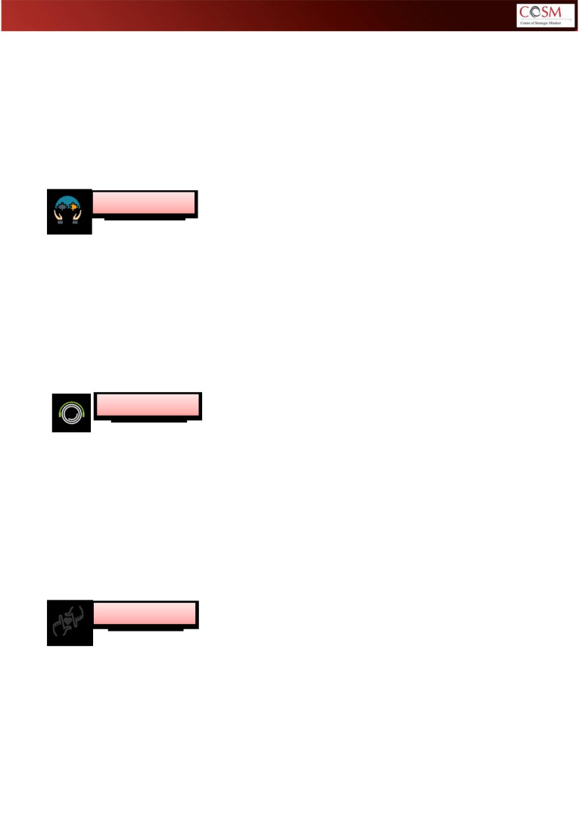

EMPATHY ASSESSMENT REPORT
EMP THY INDEX ™
Rupinder Kaur
Empathy is the ultimate form of customer insight
- Don Peppers -
Conceptualized & Designed by Centre of Strategic Mindset
© 2020 Centre of Strategic Mindset, All Rights Reserved
CONTENTS
Page
1. Introduction - What is Empathy?
3
2. Empathy Construct
3
3. Background Research
4
4. Key Research Questions
4
5. Empathy - An Instrument for Epiphany
4
6. Empathy Index - Fundamental Dimensions
5
7. Using the Report
6
8. Empathy index - Interpretation of Scores
7
9. Dimension Wise Findings and Deductions
8 - 13
10. Developmental Guidelines
14 - 15
© 2020 Centre of Strategic Mindset, All Rights Reserved
Introduction - What is Empathy?
The definition of empathy varies. Merriam-Webster dictionary defines,Empathy as ‘the action of
understanding, being aware of; being sensitive to, and vicariously experiencing others’ feelings,
thoughts and emotions, whether emanating from their past or present experiences’. To make it more
concise, empathy implies an accurate understanding of someone else’s perspectives and experiences.
To be empathic would not only mean seeing others’ perspectives (both intellectual and emotional)
but also gaining an insight into the legitimacy of that perspective.
“It is important to note that, in most cases, an intellectual understanding is insufficient - to be
empathic one must understand the emotional experience of that individual”.
Empathy is not a soft nurturing value, but a hard commercial tool that every business needs as part
of their DNA to stay relevant as well as significant.
In Harvard Business Review (Parmar, 2015b), it is also stated that there is an obvious correlation
between empathy and commercial success. Besides, businesses are far more profitable and
productive when they act ethically, and treat their staff with respect, and communicate better with
the customers. The fact that supports this statement is that the top 10 companies in the Global
Empathy Index 2015, increased in value more than twice as much as the bottom 10, and generated
50% more earnings. The average earnings of the top 10 companies went up by 6% in 2015, while the
average earnings of the bottom 10 companies, further dropped 9% (Dishman, 2015).
The past decade has seen a growing movement towards a view that postulates empathy as a
multidimensional construct. Therefore, it is worthwhile for us to understand the construct and apply it
in our lives.
Empathy Construct
We talk about empathy, most commonly as a single attribute.
But a closer and deeper look at empathy reveals three guiding
components and their inter- relationship, that influences
human behaviours in a variety of situations. Each is important
in its own way and their interoperability manifests in a variety
of ways. The three components are as below :-
• Cognitive Empathy - the ability to understand another
person’s perspective;
• Emotional Empathy - the ability to feel what someone else
feels;
• Affective Empathy - the ability to sense what another
person needs from you
© 2020 Centre of Strategic Mindset, All Rights Reserved
Background Research
Our tryst with empathy is two decades old. In our research on empathy, we have closely observed
more than 5000 people and interviewed 500 plus leaders across industries and levels to arrive at 10
critical insights as under:-
1. Empathy is learnable through reflections and structured discipline.
2. There are stages that can be acquired, honed and mastered.
3. Each preceding stage is a precursor to understanding and learning the next stage.
4. In nutshell, it is a simple process of activating ‘Stop-Start-Continue’ discipline when it comes to
understanding and manifesting empathetic behaviours.
5. Empathy is rooted in observation as well as non-judgement, almost simultaneously.
6. Empathy is about striking a balance between the inner world as well as the external or someone
else’s world, through a series of interactions between stimuli and responses.
7. Empathy is a muscle that develops with deliberate and disciplined exercises.
8. Empathy is not mere sympathy; it is rooted in concrete actions triggered by a
‘moving
experience.
9. Empathy is critical to innovation, relevance and significance.
10. Empathy is severely under assault due to modern day distractions, temptations and an excessive
focus on ‘I - me - my’ syndrome.
Key Questions that Influenced COSM’s Research on Empathy
1. What is true empathy?
2. How does it differentiate itself from sympathy?
3. What behaviours exhibit themselves on the spectrum of Apathy, Sympathy and Empathy?
4. Why empathy can lead us to an ‘Epiphany’ (the moment of truth)?
5. Why empathy is such a misconstrued or misunderstood phenomena?
6. How come empathy is such a hard thing to develop?
7. Why empathy is often considered to be a misnomer when it comes to driving hard and
aspirational results?
8. Why do we need to practice or lead with empathy?
9. How to develop empathy in a structured and conscious manner?
10. How to cultivate an Empathetic Mindset?
Empathy - An Instrument for Epiphany
We live in an interdependent world. Our thought process and action
impact others; and others’ conduct impact us, favorably or adversely
If there is one thing that makes this interdependence work at its pea
effectiveness, it is empathy. Empathy is core to ‘Problem Discovery
and is a critical imperative to be considered even befor
contemplating any resolution. It takes knowledge, understanding
personal experiences, a compassionate mindset and most importantl
a rigorous discipline to be empathetic.
How do we balance our personal needs with others’ requirements; forms the basis of EMPATHY
EQUATION between two stakeholders or among multiple ones. And it is never a perfect or a stationary
balance. It is an oscillating or shifting balance. As long as we are able to appreciate this reality, and are
willing to make adjustments, we can succeed in keeping this balance intact, and the empathy equation
in a desirable equilibrium.
© 2020 Centre of Strategic Mindset, All Rights Reserved
Empathy Index - Fundamental Dimensions
Empathy Index is based on five fundamental dimensions. Each of these dimensions displays a
distinctive and predictable pattern of relationships with definitive measures that provide a
considerable evidence for a multidimensional approach to empathy.
RELATABILITY
Ability to relate to the emotions that people around us carry, and their state of mind,
which drives their actions and behaviours. People are a product of their experiences that
influence their beliefs, logics and frame of references. If we can pause to appreciate where
others are coming from, we can adjust our approach, responses and hopefully influence
our outcomes.
RESONANCE
Ability to feel something deeply and resonate with others' emotions and feelings, without
judgement. The basic approach here is 'Appreciate First
- Critique Later'. The core
discipline to adhere here is, to gain entry into others' world with a sense of wonderment
and curiosity; and not with prejudices. It is our capacity to resonate with another person in
a manner, which is positive, affirming and empowering so that the rapport is established.
REFRAMING
Ability to come out and reframe our understanding that existed prior to experiencing
others' world. The propensity here is to challenge and realign our assumptions as well as
belief systems, in the light of contradicting information or thought-patterns manifested by
others. This allows us to understand others' point of view, find opportunities to eliminate
our assumptions and make new frames of references. Assumptions are the least form of
knowledge, so reframing our understanding is critical.
REORIENTATION
Ability to adapt and calibrate our stance, position or approach with new or better
understanding of the stakeholders and situations, to build rapport, create alignment and
strike breakthroughs. This calls for agility, flexibility and capacity to reconsider or re-
examine your actions as well as responses, based on others' thought process. It is our
calibre to frame new belief systems or alter existing thoughts to navigate the relationship
challenges and prime ourself to respond to other person’s needs
REIMAGINATION
In the end, it is all about reimagining possibilities, visualizing prospects and neutralizing
constraints, through better understanding, relatability, resonance, reframing and
reorienting our approach. This is the level of empathy that is required for mutual win-win,
co-creation; innovation and change. It is the prowess to skilfully design behaviours that are
in resonance with own value system, yet respectful of others' belief systems, thus leading
to affable responses.
© 2020 Centre of Strategic Mindset, All Rights Reserved
Using the Report
The Empathy Index Report is designed to give you an insight into your Empathy Quotient along five
empathy dimensions. Each dimension was subject to self-evaluation on eight survey items that
capture the most conspicuous behaviours. Your responses have been indexed on a five point
‘Frequency Scale’ as under:-
1. Never
2. Rarely
3. Seldom
4. Often
5. Always
The purpose of the scale is not to test your awareness; whether you know or do not know a
particular dimension, but to give you a chance to self-evaluate the frequency with which you bring
these behaviours into a conscious realm of application.
Below graphic exhibits a visual depiction of how well, or inadequately, you have fared on five
fundamental dimensions of Empathy Index. Your scores will broadly determine your ability to
exercise empathy and gain a critical insight into others’ world (customers and stakeholders) and the
barriers that you will do well to overcome, through structured reflections and translating your
insights into behaviours on ground.
Having a better understanding of our own empathetic quotient, enables us to reframe and realign
our thought processes to meet the empathy needs of the users.
Hope you enjoy your report as much as we enjoyed creating it.
© 2020 Centre of Strategic Mindset, All Rights Reserved
Overall Empathy index - Interpretation of Scores
OVERALL EMPATHY INDEX
Graphic Scale
Absolute Scores
160
% Score
80%
Please read following guidelines to make sense of your scores and devise your measures to enhance
your empathy index.
You have got a score of 147/ 200 as a combined total of EMPATHIC INDEX.
Let us understand what this score means for
180-200 (90% to 100%) : Level 5 = You understand, embody, and exemplify empathy, exceptionally
well. You have the wherewithal to ‘role-model’ empathy in your context and be a champion. Keep up
the good work but be wary of the empathy fatigue and its potential overuse, by actively asking this
question, “Is there something getting overlooked or ignored in the garb of empathy”?
140-179 (70% to 89%) : Level 4 = You often understand and demonstrate empathic concern at a
cognitive as well as emotional level but will do well to enhance your effectiveness by identifying
opportunities for real application.
100-139 (50% to 69%) : Level 3 = You show selective evidence of understanding and practising empathy,
but your record is sporadic, and consistency is missing. Having understood the power of empathy, you
will do well to increase your attempts of applying empathy and creating a positive lasting residue.
60-99 (30% to 49%) : Level 2 = There is little evidence to suggest that your tryst with empathy has
begun, yet. It may be a good idea to explore, if there are any contradictions in your mind as regards the
understanding as well as the potential of empathy, as an instrument of transformation and impact.
01-59 (0% to 30%) : Level 1 = Your scores suggest a huge gap in understanding empathy and a missing
opportunity in appreciating its impact on the people that you lead or may lead in future, in a given
context. The sooner you begin this journey, the better you will get at the game of leading.
© 2020 Centre of Strategic Mindset, All Rights Reserved
Dimension Wise Interpretation
NOT
EARLY
SELECTIVE
WELL
CLEAR
EMPATHY DIMENSIONS
DEMONSTRATED
AWARENESS
APPLICATION
MANIFESTED
STRENGTH
RELATABILITY
RESONANCE
REFRAMING
REORIENTATION
REIMAGINATION
NOT
EARLY
SELECTIVE
WELL
CLEAR
DEMONSTRATED
AWARENESS
APPLICATION
MANIFESTED
STRENGTH
© 2020 Centre of Strategic Mindset, All Rights Reserved
1. REL T BILITY ( BILITY TO REL TE) - ppreciating where someone is coming from͙..
RATING
NOT DEMONSTRATED
EARLY AWARENESS
SELECTIVE APPLIATION
WELL-MANIFESTED
CLEAR STTRENGTH
(ND)
(EA)
(SA)
(WM)
(CS)
BEHAVIOURAL INPUTS
ND
EA
SA
WM
CS
Is alert to others' feelings at a given point of time.
Prepare to calm the inner chatter for active listening.
Intuitively, senses someone's awkwardness and hesitation.
Is able to anticipate as to what is coming next.
Picks those vibes when others have something to say or talk.
Capturing cues of dissonance or disapproval.
Can sense intrusions even without any visible response.
Step into others' shoes and minds to gauge their frame
of references.
Key Reflections
Key Actions
© 2020 Centre of Strategic Mindset, All Rights Reserved
2. RESON NCE ( BILITY TO RESON TE) - Finding Common Ground͙..
RATING
NOT DEMONSTRATED
EARLY AWARENESS
SELECTIVE APPLIATION
WELL-MANIFESTED
CLEAR STTRENGTH
(ND)
(EA)
(SA)
(WM)
(CS)
BEHAVIOURAL INPUTS
ND
EA
SA
WM
CS
Can park own views to appreciate others' problems and
perspectives.
Understands what makes people upset.
Able to sense the elements of synergy as well as discord.
Can pick up cues that progress the conversation forward.
Easily identifies and addresses potentially conflicting issues.
Compassionate to people's struggles at work.
Appreciation comes easier than critique
Creates an environment for people to share, easily
Key Reflections
Key Actions
© 2020 Centre of Strategic Mindset, All Rights Reserved
3. REFR MING ( BILITY TO REFR ME) - Challenging Own ssumptions & Reframe Self Understanding͙..
RATING
NOT DEMONSTRATED
EARLY AWARENESS
SELECTIVE APPLICATION
WELL- MANIFESTED
CLEAR STTRENGTH
(ND)
(EA)
(SA)
(WM)
(CS)
BEHAVIOURAL INPUTS
ND
EA
SA
WM
CS
Can easily change the initial position in the light of new insights.
Sees disagreements as opportunities to refine understanding.
Can entertain 'Why' and 'Why Not', to broaden perspectives.
Considers strong opinions as an opportunity to self-reflect and explore.
Tries to look at both sides of the question.
Tries to find the best way to address an issue.
Can park viewpoints for the sake of deeper discovery.
Prefers asking questions rather than relying on untested assumptions.
Key Reflections
Key Actions
© 2020 Centre of Strategic Mindset, All Rights Reserved
4. REORIENT ( BILITY TO REORIENT) - Recalibrating Own pproach͙..
RATING
NOT DEMONSTRATED
EARLY AWARENESS
SELECTIVE APPLICATION
WELL-MANIFESTED
CLEAR STTRENGTH
(ND)
(EA)
(SA)
(WM)
(CS)
BEHAVIOURAL INPUTS
ND
EA
SA
WM
CS
Does not dwell too long when initial ideas are challenged
or rejected.
Excited about new inputs.
Sees contradictions as oppurtunities.
Is able to challenge own viewpoints in a discussion.
Recalibrating own response is easy.
Sees opposing ideas in creative tension, as means to
greater customer centricity.
considers success in reorienting everything around
customers.
Easily leaves current approach if it is not yielding
positive results.
Key Reflections
Key Actions
© 2020 Centre of Strategic Mindset, All Rights Reserved
5. REIMAGINATION (ABILITY TO REIMAGINE) - Reimagining Possibilities and 'End' Outcomes
RATING
NOT DEMONSTRATED
EARLY AWARENESS
SELECTIVE APPLIATION
WELL-MANIFESTED
CLEAR STTRENGTH
(ND)
(EA)
(SA)
(WM)
(CS)
BEHAVIOURAL INPUTS
ND
EA
SA
WM
CS
Begins with an end in mind and figures that out with the
stakeholders.
Is able to re-look different points of view and alters the End
Picture.
Playbacks understanding to stakeholders and gives them a
sense of validation.
Approaches a problem with a view to create a winning
proposition.
Scrapes an entire solution design if it does not fit with client's
needs.
Observes customers and users intimately to spot
unmet/unexpressed needs.
Practises structured reflections over own observations to re-
imagine outcomes.
Actively prototypes to challenge assumptions to come up with
an aspirational design.
Key Reflections
Key Actions
© 2020 Centre of Strategic Mindset, All Rights Reserved

Developmental Guidelines
With regards to specific dimensions of Empathy, a score which is aligned with no
demonstration, early awareness and selective application is low.
YOU may want you to practice some of the behaviors recommended below:
What does a low score on this dimension really mean?
RELATABILITY
• Your ability to find similar thought patterns with other people is
relatively low.
• You find it difficult to understand others’ point of view.
• You find it difficult to relate to others’ emotional expressions.
What can you do to enhance your effectiveness on this dimension?
• Suspend Judgement.
• Appreciate where others are coming from.
• Make a conscious effort to find common interests.
What does a low score on this dimension really mean?
RESONANCE
• You have to have the last word at any cost.
• People’s pains are their own, you are not bothered by them.
• People do not share their opinions and thoughts with you.
What can you do to enhance your effectiveness on this dimension?
• Be fully present and observant in conversations.
• Make an effort to park your own views to listen to others’ views.
• Ensure to acknowledge others’ pain points through words and
appropriate body language.
What does a low score on this dimension really mean?
REFRAMING
• You find it difficult to entertain two different points of view.
• You would rather ask a few questions and get into the solution
mode.
• You try to avoid conflicts arising out of difference of opinion.
What can you do to enhance your effectiveness on this dimension?
• There is an opportunity for you to entertain multiple perspectives.
• Make an active effort to resolve conflicts in your own mind first
before dealing with the stakeholders.
• Seek to understand, before being understood.
© 2020 Centre of Strategic Mindset, All Rights Reserved
Empathy index - Interpretation of Individual Dimension Scores
What does a low score on this dimension really mean?
REORIENTATION
• You would rather do things the way you want even if it is not
yielding results.
• You get tensed up if you have to entertain conflicting thoughts.
• It is difficult for you to challenge your assumptions and change
your beliefs.
What can you do to enhance your effectiveness on this dimension?
• You need to recalibrate your responses if they do not land well
with customers.
• There is a need to temporarily suspend your beliefs to understand
customer’s beliefs.
• Evaluate your current approach in the light of results/outcomes.
What does a low score on this dimension really mean?
REIMAGINATION
• Your outlook towards problem solving is short-term.
• It is difficult for you to visualise what the end picture would look
like.
• Multiple iterations for you is a waste of time and resources, as it
may not fit customer’s needs.
What can you do to enhance your effectiveness on this dimension?
• Structured reflections over own observations from customer’s
standpoints will help you form a holistic perspective.
• Visualising the end product and how it will serve the customer will
be useful to suspend own assumptions.
• Do not get wedded to your own ideas and constructs.
© 2020 Centre of Strategic Mindset, All Rights Reserved
Empathy is
Seeing with the eyes of others
Listening with the ears of others
Feeling with the heart of others
S
It is about Others and not about You
© 2020 Centre of Strategic Mindset, All Rights Reserved